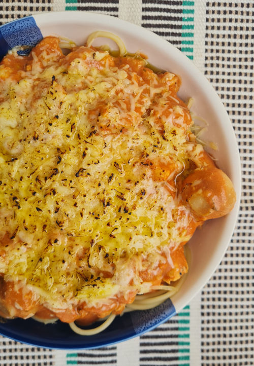
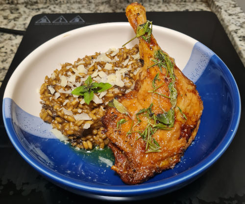

Me chamo Carlos Augusto, 33 anos, carioca e destemido.
Sempre gostei de novos desafios na minha vida, além de mudar de cidade em 2018, hoje eu procuro me reposicionar no mercado de trabalho, adquirindo novas qualificações.
Sempre fui um cara sorridente e brincalhão, hoje com essa vida adulta, minha vida se resume a lavar, passar, cozinhar, trabalhar, estudar e quando sobra tempo eu durmo!
A seguir, me sentindo o gato da piscina.😎
Quando eu era criança sempre tive um gosto e aptidão para eletrônicos, gostava de desmontar e montar coisas, concertar coisas, adorava video-game, aparelhos celulares e computadores.
Porém, por falta de base financeira não pude seguir com o que de fato eu gostava.
No início da minha fase adulta me interessei pela área da gastronomia e fiz cursos para me aperfeiçoar.
Segui durante 6 anos na área, mas percebi que cozinhar pra mim era mais um hobbie, hoje trabalho com cafés, mas sigo batalhando para fazer aquilo que eu sempre quis desde criança.
A seguir, eu no meu ambiente de trabalho depois de umas doses de café ☕.
Nos meus tempos livres além de cozinhar, gosto de ler, ouvir músicas (rock, blues), de vez em quando eu me arrisco em sair e fazer uma corrida.
Confesso que hoje eu prefiro ficar em casa, não a nada melhor do que o nosso canto...
De vez em quando me arrisco em jogar, é raro, mas tento!
A seguir, algumas fotos do meu hobbie.🔥

